오늘의 arXiv Top 15
2026-11-05 (목) · cs.CV / cs.LG / cs.RO / cs.CL / cs.AI New submissions 전수 평가
447
신규 논문
130
cs.CV
110
cs.LG
53
cs.RO
61
cs.CL
93
cs.AI
15
정밀 리뷰
분야별 필터
전체 15개 논문 표시 중
1
80점
Open-HumanWAM: An Open Recipe for Scaling Human and Robot Experience for Embodied Foundation Models
VLA
relevance 10/10
ByteDance 자체 양식
Computer Vision and Pattern Recognition (cs.CV)
1인칭 사람 영상 50,000시간을 정제하고 손 동작을 로봇 end-effector 행동으로 맞춰 world-action model을 사전학습하는 공개 레시피를 내놓음. 사람 영상 시간을 늘릴수록 RoboTwin 2.0 random 장면(조명·잡동사니·책상 높이를 바꾼 평가) 성공률이 로그 선형으로 오름(100시간 21.5%에서 50,000시간 42.9%). 로봇 데이터와 섞은 모델은 RoboTwin 2.0 사후 학습 뒤 clean 평가와 random 평가의 평균 성공률 88.65%를 기록함.
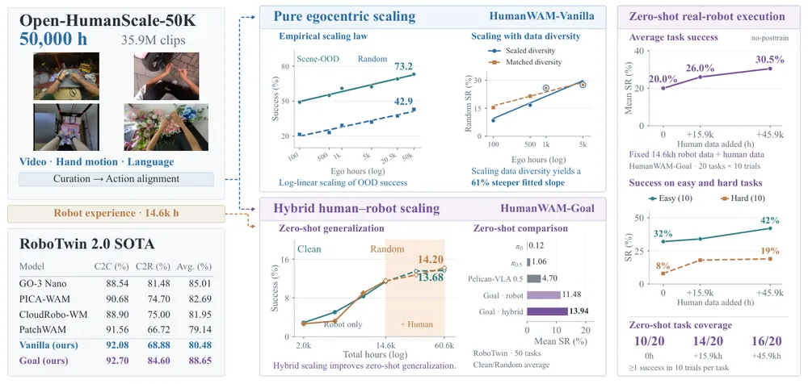
무슨 문제인가
teleoperation으로 로봇 demonstration을 모으는 비용이 커서, 손 동작과 언어가 붙은 1인칭(egocentric) 사람 영상을 사전학습에 쓰려는 시도가 늘고 있음. 그러나 사람 영상 양을 늘렸을 때 로봇 성능이 꾸준히 오르는지는 레시피에 따라 결과가 엇갈림. 기존 HumanScale은 held-out 로봇 궤적의 action loss가 줄어드는 것을 보였으나, closed-loop 과제 성공률로 scaling을 재거나 시간과 다양성(task·scene 수)을 따로 떼어 본 연구는 부족했음. 데이터·학습 코드·체크포인트가 모두 공개된 레시피도 없었음.
어떻게 푸나
먼저 HumanNet, EgoSuite-Open100K, EgoDex, Gen-HumanEgo, EgoVerse 다섯 출처에서 약 104,289시간을 모아 50,000시간, 3,590만 clip으로 정제함(Open-HumanWAM-50K). 정제는 손이 화면에 보이는지, 손·카메라 pose 추정이 튀지 않는지, 손이 움직이는 구간인지를 기준으로 함. 출처마다 다른 좌표계는 카메라 좌표축, 손목 축, 엄지와 검지 끝 거리로 만든 gripper 개폐도를 맞춰 양손 16차원 end-effector 행동(위치 3, quaternion 4, 개폐 1)으로 통일함. 모델 HumanWAM-Vanilla는 world-action model로, 현재 이미지 1장과 언어 지시를 받아 미래 영상과 행동 chunk를 함께 생성함. Wan2.2-TI2V-5B 영상 모델에 같은 깊이의 action expert를 붙이고, 두 expert가 masked self-attention을 함께 거치는 Mixture-of-Transformers 구조임. 대부분 실험은 행동 token이 현재 frame만 보는 isolated attention을 씀. results의 scaling 수치는 행동 token이 미래 영상까지 참조하는 inverse-dynamics(IDM) attention 설정의 값임. 확장판 HumanWAM-Goal은 목표 배치를 담은 goal image를 추가 입력으로 받고, 로봇 데이터 14,600시간과 사람 데이터를 함께 사전학습함.
결과
- RoboTwin 2.0(Aloha-AgileX 양팔 로봇의 탁상 과제 50개 시뮬레이션)에서 clean demonstration으로만 사후 학습하고 장면을 바꿔 평가함. 사람 영상을 100시간에서 50,000시간으로 늘리면 배경·질감을 바꾼 scene-ood 성공률이 49.1%에서 73.2%로, 조명·잡동사니·책상 높이까지 바꾼 random이 21.5%에서 42.9%로 오름. 사람 영상 사전학습이 없으면 각각 29.2%, 7.7%이고, 두 곡선은 log10(시간)에 대해 R²가 0.969, 0.955인 직선에 맞음. 학습 분포인 clean은 87.4~89.0%로 사전학습 없을 때(87.9%)와 비슷함.
- 같은 시간에서 task·scene 수를 함께 늘린 corpus와 수를 고정하고 궤적만 늘린 corpus를 비교함(100~5,000시간). random 성공률의 fitted slope가 10배당 11.91퍼센트포인트 대 7.41퍼센트포인트로, 다양성을 늘린 쪽이 약 61% 가파름.
- RoboTwin 2.0 사후 학습 결과 HumanWAM-Goal은 Clean2Clean(clean 학습, clean 평가) 92.70%, Clean2Random(clean 학습, random 평가) 84.60%로 평균 88.65%임. 비교 표에서 가장 높은 기존 모델 GO-3 Nano는 88.54%, 81.48%로 평균 85.01%임. 사람 데이터만 쓴 HumanWAM-Vanilla는 Clean2Random 68.88%로 평균 80.48%임.
- 실제 로봇에서 사후 학습 없이 20개 과제를 과제당 10회 시도함. 로봇 데이터 14,600시간을 고정하고 사람 영상 45,900시간을 더하면 평균 성공률이 20.0%에서 30.5%로 오르고, 1회 이상 성공한 과제 수가 10개에서 16개로 늘어남. 어려운 과제 10개의 평균은 8%에서 19%로 오름.
한계
scaling law는 저자들의 모델·데이터·RoboTwin 시뮬레이션 범위에서 얻은 경험식이고, 그 밖으로 이어진다는 근거는 없음. 사후 학습 없는 zero-shot 성공률은 RoboTwin 평균 13.94%, 실로봇 30.5%로 아직 낮음. visual goal에 따른 in-context learning은 제공된 본문 범위에서 정성 사례만 확인되고 성공률 수치는 확인 불가함.
누리랩 연구와의 연결
- 사람 영상 사전학습이 in-distribution보다 장면이 바뀐 OOD 성공률을 주로 올린다는 결과는, VLA·world model의 일반화 실험을 설계할 때 clean과 random 평가를 나눠 보아야 하는 근거가 됨. 공개된 50,000시간 corpus와 체크포인트는 manipulation VLA 사전학습의 baseline으로 바로 쓸 수 있음.
- goal image 하나로 가중치 변경 없이 행동을 바꾸는 HumanWAM-Goal은, 실패 뒤 목표 이미지를 바꿔 다시 시도하는 failure recovery나 test-time 목표 지정 연구의 출발점으로 쓸 수 있음.
2
78점
Reinforcement Learning Enables Scaling Generalist Robot Policy Improvement
VLA
relevance 10/10
ICLR 양식 (추정)
Machine Learning (cs.LG)
π0.5 VLA를 여러 task에서 동시에 RL로 post-training하고 학습 task 수를 1개에서 144개로 늘리며, 어떤 방식이 학습하지 않은 task까지 성능을 올리는지 체계적으로 비교함. critic을 쓰는 방식은 task가 다양해질수록 처음 보는 장면에서 base policy보다 최대 58퍼센트포인트, 처음 보는 물체에서 최대 39퍼센트포인트 높은 성공률을 보임.
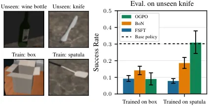
무슨 문제인가
VLA 같은 generalist robot policy는 여러 task를 zero-shot으로 어느 정도 하지만 배치하려면 대개 추가 적응이 필요함. 사람이 감독하는 적응은 비싸므로 로봇이 자기 경험으로 RL을 하는 방식이 쓰이지만, 기존 연구는 거의 task 하나씩 따로 개선함. 이렇게 하면 policy가 그 task 전문가로 좁아지고, 새 task마다 다시 online 학습을 해야 함. 여러 task에서 동시에 RL을 하면 학습한 task 밖으로도 성능이 오르는지, 오른다면 어떤 알고리즘과 task 구성이 필요한지는 정리된 적이 없음.
어떻게 푸나
새 알고리즘을 만들기보다, 기존 방식 세 계열을 같은 프로토콜에서 비교하는 실험 연구임. 프로토콜은 학습 task마다 고정된 policy로 episode 20개를 모아 공유 replay buffer에 넣고, 이 데이터로 policy나 critic을 갱신하는 과정을 10번 반복함. 첫째 계열 FSFT(filtered supervised fine-tuning)는 성공한 궤적만 골라 policy를 지도학습으로 fine-tuning함. 둘째 계열 BoN(Best-of-N)은 policy 가중치를 고정하고, TD 학습한 state-action critic으로 policy가 뽑은 action chunk 후보 32개 중 가장 높은 점수의 것을 실행함. 셋째 계열 OGPO(off-policy generative policy optimization)는 critic을 학습하면서 flow policy의 denoising 과정을 PPO 방식으로 갱신해 critic 값이 높은 action을 내도록 바꿈. critic은 π0.5 내부 표현, proprioception, action chunk를 입력으로 받는 residual MLP(BroNet) ensemble임. 학습 task 집합은 작은 집합이 큰 집합에 그대로 들어가도록 늘리고, base policy 평균 성공률이 약 30%로 유지되게 고름.
결과
- MolmoSpaces(물체 18종과 물체마다 가정 환경 장면 55~56개를 조합해 물체를 집어 드는 시뮬레이션 과제 모음)에서 학습 task 수를 1개에서 144개로 늘림. task 하나만 학습하면 처음 보는 물체에서 base policy보다 성능이 내려감. task 수가 늘면 OGPO와 BoN은 처음 보는 장면에서 최대 58퍼센트포인트, 처음 보는 물체에서 최대 39퍼센트포인트 base policy를 넘음. FSFT는 학습 task 성능은 오르지만 처음 보는 task에서의 이득이 훨씬 작음.
- 학습 task 자체의 성공률에서도 여러 task를 함께 학습할 때 OGPO는 FSFT보다 43~50퍼센트포인트, BoN은 15~21퍼센트포인트 높음. 다만 task 하나씩 따로 학습한 전문가 policy들의 평균이 multi-task policy보다 약간 높음.
- 처음 보는 물체별로 보면 학습 task를 144개로 늘린 단계에서 BoN의 wine bottle 성공률이 24%에서 44%로 오름. 같은 물체에서 FSFT와 OGPO는 base policy보다 크게 낮아짐. policy 가중치를 바꾸지 않는 critic만으로도 학습 물체 분포에서 먼 물체까지 성능이 오른 결과임.
- 장면만 늘린 학습과 물체만 늘린 학습을 OGPO로 비교하면, 장면 다양성은 새 장면에, 물체 다양성은 새 물체에 더 잘 옮겨감. 두 축 모두에서 base policy를 넘은 것은 물체를 늘린 경우뿐임. 모든 실험은 시뮬레이션이고 seed 3개 평균임.
한계
실로봇 실험이 없고 manipulation 시뮬레이션에서만 확인함. task는 base policy가 이미 어느 정도 성공하는 pick 계열로 골랐으므로, base policy가 거의 못 하는 task에서도 같은 결과가 나오는지는 보이지 않음. 추가로 LIBERO-90(시뮬레이션 조작 과제 90개 모음)에서 시험했을 때는 처음 보는 task로의 일반화가 나타나지 않음. 알고리즘 간 차이는 학습 task 밖 성능이 덜 내려가는 정도에서만 보였음.
누리랩 연구와의 연결
- policy를 고정하고 critic으로 action만 고르는 BoN도 처음 보는 물체로 성능이 옮겨감. test-time optimization과 failure recovery 연구에서 value 기반 action 선택을 설계할 때 근거가 됨.
- 학습 task 구성(물체 다양성 대 장면 다양성)이 일반화 범위를 정한다는 분석은, manipulation 데이터 수집과 multi-task RL 실험을 설계할 때 바로 참고할 수 있는 기준임.
3
76점
Perceptive Humanoid Motion from Simulation
Embodied AI
relevance 10/10
IEEE 학술지 계열 양식 (추정)
Robotics (cs.RO)
사람이 시연하지 않고 시뮬레이션에서만 만든 영상·언어·동작 데이터로 humanoid의 시각 기반 전신 동작을 학습함. 학습 중 본 적도, 스캔한 적도 없는 실제 집 6곳에서 6개 skill 360회 시도의 평균 성공률 91%를 얻음.
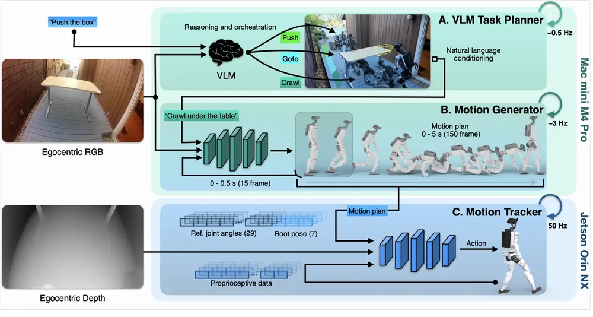
무슨 문제인가
카메라 영상과 자연어 지시를 humanoid의 관절 명령으로 바꾸려면 영상, 지시, 전신 궤적이 짝지어진 데이터가 필요함. 이런 데이터는 teleoperation이나 착용형 캡처 장비로 모으므로 데이터 1시간에 사람 시간이 최소 1시간 듦. 선행 humanoid 시스템 VLK처럼 배치할 방을 미리 스캔해 그 안에서만 학습하고 평가하는 방법은 처음 보는 집에서는 쓸 수 없음. 또한 생성 모델이 만든 전신 궤적을 따라가는 기존 tracker는 깊이 정보를 보지 않아, 실제 장면이 계획과 어긋나면 대응하지 못함.
어떻게 푸나
HALO(Humanoid Autonomy, Learned in simulation, running Onboard)는 데이터 생성 파이프라인과 3단 제어 구조로 이루어짐. 데이터는 과제를 걷기, 돌기, 앉기 같은 구간으로 나눠 text prompt, waypoint, 끝 자세(keyframe)를 주고 motion diffusion model KIMODO로 궤적 후보를 여럿 만든 뒤, 기하 검사기로 가장 좋은 후보만 남김. 이 궤적을 Infinigen 절차 생성 방 1,000개에 배치해 머리 카메라 영상을 렌더링함. 실행 시에는 VLM orchestrator(약 0.5Hz)가 지시를 subtask로 나누고 성공 여부를 보며 다음 단계로 넘기거나 재시도함. motion generator(약 3Hz)는 고정된 Qwen3.5-2B encoder와 flow matching DiT decoder로 RGB 영상과 subtask를 받아 5초 분량 전신 궤적(관절 29개와 pelvis 자세)을 출력함. 이때 이미 실행이 확정된 앞 15 frame(0.5초)을 노이즈 없는 입력으로 넣고 나머지 4.5초만 생성하도록 학습해 계획이 바뀔 때 동작이 끊기지 않게 함. motion tracker(50Hz)는 궤적과 depth, proprioception을 받아 관절 명령을 내며, 시뮬레이션의 정답 지형을 보는 skill별 PPO expert를 distillation해 만듦.
결과
- 학습에 없던 실제 환경 6곳에서 skill 6개(물체로 걷기, 앉기, 반쯤 열린 문 옆걸음 통과, 웅크려 테이블 밑 통과, 기어서 통과, 상자 밀기)를 환경당 10회씩 시험함. 360회 평균 성공률이 91%이고, 같은 skill의 시뮬레이션 held-out 방 100곳 평균도 91%임.
- 여러 skill을 잇는 과제는 실제 환경 1곳에서 시험했고 평균 성공률이 70%로 내려감. 문 옆걸음 통과 뒤 물체로 걷기(DOOR→GO-TO)는 100%지만, 웅크려 통과 뒤 앉기(CROUCH→SIT)는 60%임. 웅크려 통과, 물체로 걷기, 상자 밀기를 잇는 CROUCH→GO-TO→PUSH는 50%임. 실패는 주로 앞 동작이 끝난 자세 때문에 다음 목표 물체가 시야 밖에 있을 때 생김.
- 시뮬레이션 앉기 과제(held-out 방 100곳, 각 10회)에서 앞 15 frame 조건 학습 방식의 성공률은 84%임. 겹치는 frame을 추론 시에 guidance로 맞춰 이어 붙이는 기존 방법 real-time chunking은 66%, 이어 붙이기 없이 생성하면 24%임.
- 같은 앉기 과제에서 학습 방 수를 1곳에서 100곳으로 늘리면 성공률이 43%에서 81%로 오르고, 1,000곳에서 84%가 됨. tracker에서 depth를 빼면 84%에서 74%로 내려감.
한계
다른 humanoid 시스템과 같은 조건에서 직접 비교한 실험은 없고, 비교는 자체 ablation뿐임. skill은 6개이고 학습 지시문은 10개로 고정되어 있으며, 새 skill을 추가하려면 사람이 prompt와 keyframe을 직접 써야 함. 시각에만 기대므로 물체가 시야를 벗어나거나 가려지면 접촉이 많은 과제 성능이 낮아진다고 저자가 밝힘.
누리랩 연구와의 연결
- VLM orchestrator가 매 단계 영상을 보고 완료, 재시도, subtask 삽입을 고르는 구조는 failure detection과 recovery 연구의 단순한 baseline으로 쓸 수 있음. 저자가 지적한 '다음 목표가 시야 밖' 실패는 active perception(탐색, 제자리 회전)을 붙일 자리를 구체적으로 보여 줌.
- 생성된 궤적을 절차적 장면에 배치해 시점 영상을 렌더링하는 데이터 생성 방식과, 실행 확정 구간을 조건으로 주는 flow matching 학습은 VLA의 비동기 action chunking에도 그대로 옮겨 시험해 볼 수 있음.
4
76점
From Pixels to Actions--Towards Native Vision-Language-Action Policies
VLA
relevance 9/10
Computer Vision and Pattern Recognition (cs.CV)
별도 vision encoder 없이 pixel과 text를 한 backbone에서 함께 처리하고, action expert가 backbone의 여러 깊이 layer를 읽게 한 VLA인 NEO-VLA를 제안함. backbone을 고정한 LIBERO 평균 성공률이 같은 조건의 Qwen3-VL-2B 기반 79.5%보다 높은 90.9%임.
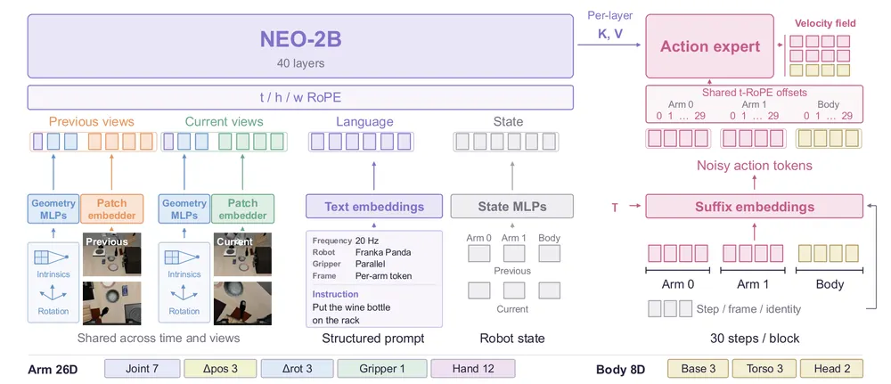
무슨 문제인가
대부분의 VLA는 CLIP, SigLIP 같은 사전학습 vision encoder가 이미지를 먼저 압축한 뒤 그 최종 출력만 language backbone과 action head에 넘김. 조작 과제는 국소 geometry, 경계, 미세한 상태 변화에 기대는데, 이런 정보는 encoder가 semantic 표현으로 압축하는 과정에서 약해질 수 있음. encoder 구조에서는 language backbone의 어느 layer를 읽어도 policy가 encoder의 고정된 최종 출력 뒤에 놓임. 그래서 action에 필요한 시각 정보가 처리 과정의 어느 깊이에서 나오는지 직접 조사하기 어려웠음.
어떻게 푸나
NEO-VLA는 저자들의 encoder-free vision-language model인 NEO-2B(40 layer, 2B parameter)를 backbone으로 씀. 입력은 이전·현재 시점의 최대 3개 카메라 이미지, camera intrinsics와 rotation, 제어 주파수와 embodiment를 적은 structured prompt, 로봇 state임. 이미지는 2단 convolution patch embedder가 32×32 영역마다 token 하나로 바꾸어 text token과 같은 backbone에 넣음. 따로 붙인 좁은 action expert의 각 layer는 지정된 backbone layer의 key·value cache를 읽음. 이 대응표를 layer map이라 부르며, 어느 깊이를 읽을지를 설계 선택지로 둠. expert는 flow matching(noise에서 action으로 가는 velocity field를 학습하는 생성 방식)으로 팔 2개와 몸체의 30 step action chunk를 출력함. 학습은 9개 공개 데이터셋 약 223만 episode로 expert만 학습한 뒤 전체를 fine-tuning하고, vision-language 능력을 유지하려고 multimodal 이해 데이터와 함께 학습(co-training)함.
결과
- LIBERO(시뮬레이션 조작 benchmark, Spatial·Object·Goal·Long 4개 suite)에서 backbone을 고정하고 expert만 학습함. 이때 평균 성공률이 NEO-VLA 90.9%, Qwen3-VL-2B 79.5%, Gemma-3-4B 84.5%임. 세 모델 모두 같은 expert와 Open X-Embodiment 사전학습 조건이며, 전체 fine-tuning 후에는 95.3%, 90.8%, 91.0%로 차이가 줄어듦.
- 같은 40 layer backbone과 28 layer expert에서 읽는 layer만 바꾼 비교임. 전 깊이에 고루 퍼진 skip-28이 뒤쪽 12~39 layer만 읽는 end-28보다 고정 시 90.9% 대 86.7%, fine-tuning 후 95.3% 대 92.5%로 높음.
- Qwen3-VL에서 expert 13개 layer가 vision tower 중간 feature를 읽게 하면 고정 backbone 성능이 79.5%에서 64.9%로 내려감. 중간 feature에 접근만 해서는 같은 이득이 나오지 않음을 보임.
- 실로봇 과제 3개(테니스공을 캔 위에 올리기, 테이프 롤을 그릇에 넣고 그 안에 테니스공 넣기, 누운 캔을 세워 테이프 롤에 꽂기)로 비교함. 과제당 demonstration 50개로 fine-tuning하고 20회씩 평가함. 성공 횟수는 NEO-VLA 12, 17, 13회, π0.5 10, 14, 13회임. 코드와 weight는 공개됨.
한계
backbone 비교는 사전학습 데이터와 용량이 서로 달라서, 성능 차이를 encoder 제거만의 효과로 볼 수 없음을 저자도 인정함. LIBERO-Pro(물체·위치·지시문·목표 변형 benchmark)에서 위치 변형 3.0%, 목표 변형 6.3%로 낮아 새 공간 배치와 목표에는 여전히 약함. 실로봇은 과제 3개, 과제당 20회라 통계적 근거는 약함.
누리랩 연구와의 연결
- 논문은 layer별 key·value를 다른 관측의 것으로 바꾸거나 입력을 가려 action 변화를 재는 진단 실험도 함. 이 방법은 failure detection에서 실패 원인이 지각 단계인지 행동 단계인지 가르는 도구로 옮겨 쓸 수 있음.
- 외관 변화에는 강하고 위치·목표 변화에는 약하다는 결과는, manipulation에서 object-centric 3D 표현이나 공간 추론을 보태야 할 지점을 구체적으로 보여 줌.
5
72점
RACE: Calibrated Cumulative Scoring for Rollout-Free Robot Policy Checkpoint Selection
Robot Learning
relevance 9/10
Robotics (cs.RO)
학습 중 저장된 robot policy checkpoint 가운데 실제로 잘 동작할 것을 rollout 없이 고르는 점수 RACE를 만듦. 실제 Franka에서 π0.5-DROID checkpoint 순위와 실측 성공률 순위의 Spearman 상관이 validation loss의 0.689보다 높은 0.791로 나옴.
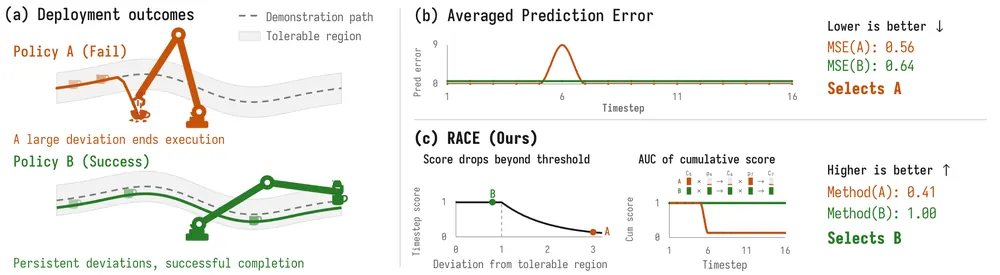
무슨 문제인가
policy를 학습하면 checkpoint가 많이 생기지만, 어느 것이 배포에서 가장 잘하는지는 로봇에서 checkpoint마다 여러 번 돌려 봐야 알 수 있음. rollout 없이 쓰는 흔한 기준은 held-out demonstration에서의 평균 action 예측 오차인데, 실제 성공률과 순위가 잘 맞지 않음. 저자들은 원인을 두 가지로 봄. 첫째, 평균 오차는 policy가 스스로 회복할 수 있는 작은 오차와 과제를 망치는 큰 오차를 구분하지 않음. 둘째, 큰 오차가 난 뒤에는 실제 실행이 reference 궤적에서 벗어나는데도 이후 timestep 예측을 똑같은 비중으로 평균함.
어떻게 푸나
RACE(Reference-cAlibrated cumulative scoring for rollout-free Checkpoint SElection)의 입력은 성공 궤적 몇 개로 된 고정 validation set과 checkpoint 하나임. 출력은 checkpoint 점수 하나임. 먼저 예측한 action chunk와 reference chunk의 차이를 translation, rotation, 관절 위치 같은 action group별로 물리 단위에서 잼. chunk 안에서는 timestep 거리 중 큰 쪽 50%의 평균을 써서 짧고 큰 오차가 묻히지 않게 함. 다음으로 고정된 visual encoder feature와 proprioception으로 비슷한 reference 상태 k개를 찾고, 그 상태들의 action끼리 차이 분포에서 quantile q를 그 상태의 허용 임계값으로 둠. 임계값 안의 차이는 점수 1을 받고, 넘는 만큼 지수적으로 점수가 내려가며, group 점수는 soft minimum으로 합쳐 timestep 점수가 됨. 마지막으로 timestep 점수를 시간 순서로 곱해 누적 곡선을 만들고, 그 시간 평균(AUC)을 궤적끼리 다시 평균해 checkpoint 점수로 씀. 그래서 이른 시점의 큰 오차는 이후 모든 timestep의 기여를 함께 낮춤.
결과
- DexMimicGen(양팔·dexterous hand 조작 시뮬레이션 과제 모음) 8개 과제, 과제당 학습 seed 10개, seed마다 checkpoint 12개를 각각 200회 rollout으로 실측해 비교함. held-out demonstration을 reference로 쓸 때 Spearman 상관이 RACE 0.83, validation loss 0.52, Off-Manifold Norm(이웃 expert action이 만드는 부분공간 밖 성분의 크기) 0.60임.
- reference를 Gaussian noise가 섞인 성공 rollout으로 바꾸면 RACE의 Spearman 상관은 0.78로 유지되고, validation loss는 -0.47로 순위가 뒤집힘.
- 실제 Franka Research 3에서 policy 계열 2개를 각각 과제 3개, checkpoint 10개, checkpoint당 30회 rollout으로 실측함. DROID Diffusion Policy에서는 Spearman 상관이 RACE 0.901, Off-Manifold Norm 0.527, validation loss -0.700임. RACE가 고른 checkpoint의 nRegret(최고 checkpoint와의 성공률 차이를 정규화한 값)은 0임. VLA인 π0.5-DROID에서는 Spearman 상관이 RACE 0.791, validation loss 0.689, Off-Manifold Norm 0.225임.
- 같은 timestep 점수를 그냥 평균할 때와 누적 곱으로 묶을 때를 DexMimicGen 4개 과제에서 비교함. Spearman 상관이 0.63에서 0.76으로 오르고, nRegret은 0.180에서 0.096으로 내림.
한계
근처 성공 궤적의 action 변동은 허용 오차의 대리값일 뿐이고, 후보 policy가 실제로 오차에서 회복할지나 자기 행동이 만든 새 상태에서 어떻게 할지는 알 수 없음. 점수는 상대 순위이지 성공률 추정값이 아니라서 고른 후보는 여전히 로봇에서 검증해야 함. 실로봇 결과는 policy 계열 2개, 과제 6개의 점 추정이고 과제별로 조정한 설정을 썼음. DexMimicGen 8개 과제에서 과제별 설정 대신 모든 과제에 같은 설정을 쓰면 평균 Spearman 상관이 0.80에서 0.69로 내림. 코드 공개 여부는 본문에서 확인 불가임.
누리랩 연구와의 연결
- VLA fine-tuning 실험에서 checkpoint마다 실로봇 평가를 하는 비용을 줄이는 도구로 바로 쓸 수 있음. 실로봇 실험에서도 과제당 held-out 성공 demonstration 30개만 reference로 썼으므로 π0.5 계열 실험에 붙여 볼 만함.
- 상태별 허용 오차와 누적 곱으로 치명적 오차를 가려내는 방식은 failure detection에서 회복 가능한 오차와 아닌 오차를 나누는 문제와 같은 구조임. 실시간 failure 예측 점수로 바꿔 볼 수 있음.
6
72점
ELA: End-to-End Latent Action Policy Learning from Video Demonstrations
Manipulation
relevance 9/10
CoRL 2026 채택
Robotics (cs.RO)
video에서 뽑은 latent action을 policy가 예측하기 쉽고 로봇 action으로 풀기 쉽게 policy·decoder와 함께 학습해, action label이 적은 imitation learning에 action 없는 video를 쓰게 함. 실제 Franka 과제 5개에서 robot demonstration 10개와 사람 video 40개로 평균 성공률을 Diffusion Policy의 48%에서 70%로 올림.
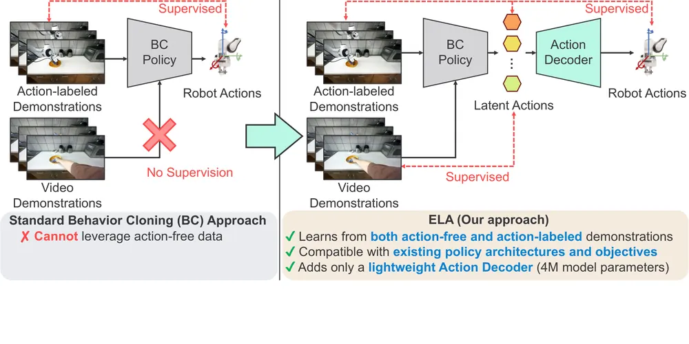
무슨 문제인가
robot action label이 붙은 demonstration은 모으기 비싸고, action이 없는 video는 많음. LAPA 같은 latent action 방법은 두 frame 사이 변화를 설명하는 latent action을 먼저 학습하고, 이것을 고정된 target으로 두고 policy를 따로 학습함. 이렇게 단계를 나누면 latent 공간이 policy가 관측에서 예측하기 쉬운지(modelability), 연속 robot action으로 정확히 풀리는지(decodability)를 고려하지 않음. 저자는 이 때문에 큰 데이터로 사전학습한 latent action이 few-shot policy 학습에서 오히려 도움이 되지 않는다고 봄.
어떻게 푸나
ELA(End-to-End Latent Action)는 policy를 latent action policy와 action decoder 두 부분으로 나눔. inverse dynamics model(IDM)은 k step 떨어진 RGB frame 두 장을 받아 iFSQ(각 차원을 정해진 몇 개 값으로 반올림하는 FSQ 양자화의 개량판)로 양자화한 latent action을 냄. forward dynamics model(FDM)은 첫 frame과 latent action으로 뒤 frame을 복원해 latent가 움직임 정보를 담게 함. latent action policy는 Diffusion Policy나 UWM(Unified World Model) 같은 기존 policy 구조를 그대로 쓰고, 관측 한 장에서 IDM의 latent action을 예측하도록 학습함. action decoder는 4M parameter transformer이며 action label이 있는 데이터에서만 latent action을 k step 연속 action으로 바꾸도록 학습함. policy gradient를 IDM에 바로 넣으면 latent가 예측만 쉬운 쪽으로 몰리므로(collapse), 두 pass를 번갈아 돌림. LAM-update pass는 policy를 고정하고 FDM·action·alignment loss로 IDM과 decoder를 갱신함. Policy-update pass는 IDM을 고정하고 policy loss와 alignment loss로 policy를 갱신함. alignment loss는 policy 중간 feature를 고정된 DINOv3 feature와 cosine similarity로 맞추는 REPA 방식임. gripper 개폐는 latent action에서 빼고 label로 학습한 별도 head가 예측함.
결과
- 실로봇: Franka Panda에서 과제 5개를 과제당 robot demonstration 10개와 사람 video 40개로 학습하고 과제당 20회 평가함. 평균 성공률이 ELA-DP 70%, DP 48%임. 공개 IDM을 고정해 쓴 LAPA 26%, Villa-X 27%, UniVLA 8%, 같은 데이터로 학습한 LAPA-DINO는 33%임. open-oven 과제만 ELA-DP 30%로 DP 35%보다 낮음.
- 같은 데이터를 쓰게 맞춘 비교: 사람·robot video로 사전학습하는 Dynamo는 38%, 같은 데이터로 처음부터 학습한 Villa-X는 6%, in-domain fine-tuning한 Villa-X는 21%임. 데이터를 볼 수 있다는 것만으로는 DP를 넘지 못함.
- representation alignment 제거 ablation: 실로봇 과제 일부에서 성공률이 83%에서 45%로 내림. alignment를 뺀 변형은 decodability는 좋지만 modelability가 나쁨.
- LIBERO-10(시뮬레이션 장기 조작 과제 10개)에서 과제당 demonstration 50개 중 5개만 action label을 줌. 평균 성공률이 DP 31%에서 ELA-DP 54%로, UWM 19%에서 ELA-UWM 59%로 오름(seed 3개). 과제당 action label을 준 demonstration을 20개로 늘리면 차이가 7~10퍼센트포인트로 줄어듦.
한계
실로봇은 과제 5개, 과제당 20회이고 대규모 cross-embodiment 데이터로 학습해 보지 않음. LAPA·Villa-X·UniVLA 주 비교는 공개 가중치를 고정해 쓴 것이고, 같은 데이터로 맞춘 비교는 LAPA-DINO, Dynamo, Villa-X 재학습 변형뿐임. gripper는 action label이 필요한 별도 head가 맡고, 정밀하거나 dexterous한 과제는 평가에서 뺌. 코드 공개 여부는 본문에서 확인 불가임.
누리랩 연구와의 연결
- 사람 video를 manipulation policy 학습에 쓰는 latent action 계열에서, latent 공간을 downstream policy와 decoder 기준으로 평가하는 modelability·decodability 지표를 줌. VLA 사전학습용 latent action을 고를 때 같은 측정을 그대로 써 볼 수 있음.
- 기존 policy 구조를 바꾸지 않고 4M decoder만 붙이는 구조라, 실험실의 Diffusion Policy 기반 실로봇 파이프라인에 적은 robot demonstration으로 붙여 보기 쉬움.
7
70점
Correct Robots Before They Make Mistakes: Proactive Human-in-the-Loop Intervention via Preference Learning
Manipulation
relevance 9/10
ICRA·IROS·RA-L 계열 양식 (추정)
Robotics (cs.RO)
운영자가 XR 헤드셋으로 policy의 다음 동작을 미리 보고 실수 전에 개입하게 한 뒤, 거절된 예측과 실제 실행한 교정을 짝지어 preference 학습함. 교정 에피소드 5개만으로 diffusion policy의 평균 성공률이 70.3%로, 반응형 교정 방식 HG-DAgger의 44.0%보다 높음.
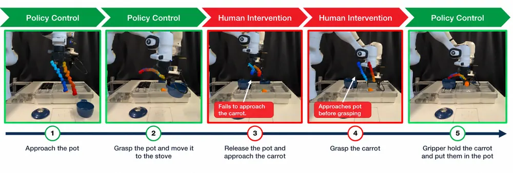
무슨 문제인가
기존 human-in-the-loop imitation learning은 대부분 반응형(reactive) 교정임. 운영자는 로봇이 지금 하는 동작만 보고 판단하므로 오류가 이미 일어난 뒤에 개입하게 됨. 그래서 교정 데이터에 과제를 진행하는 동작과 함께 오류에서 빠져나오는 recovery 동작이 섞임. 이런 데이터로 학습하면 오류가 없는 상황에서도 불필요한 recovery 동작이 나옴. 이 논문은 실수가 일어나기 전에 미리 개입하는 방식을 선행형(proactive) 교정이라 부름. 미래 궤적을 미리 보여 주고 개입하는 선행 연구 PPL(Predictive Preference Learning)은 시뮬레이션에서만 검증되었고 실로봇 조작에서는 시도되지 않았음.
어떻게 푸나
PHIL(Proactive Human-in-the-Loop)은 action chunk를 내는 policy를 대상으로 함. policy가 낸 30-step chunk를 end-effector 궤적으로 바꿔 Meta Quest 3 XR 화면에서 실제 작업 공간에 겹쳐 보여 줌. 운영자는 예측 궤적이 잘못될 것 같으면 컨트롤러로 제어를 넘겨받아 teleoperation으로 교정함. 개입 중에도 policy는 10 step마다 계속 질의되며, 그 예측은 실행되지 않고 화면에만 표시됨(shadow mode). 개입 중 표시된 예측 하나하나를 거절된 chunk로 두고, 같은 질의 시점부터 실제 실행된 다음 30개 행동을 선호 chunk로 두어 한 쌍을 만듦. 운영자가 제어를 돌려줄 때 표시된 예측은 받아들여진 것으로 보고 거절 쌍에서 뺌. post-training은 원래 demonstration의 imitation loss에, 선호 chunk의 imitation loss가 거절 chunk보다 낮아지도록 하는 pairwise logistic loss를 더함. imitation loss를 그대로 쓰므로 diffusion policy(BESO)와 VLA(X-VLA)에 같은 방식으로 적용됨.
결과
- 실로봇 과제 4개(바나나 집기, 수건 접기, 냄비에 당근 넣기 3단계, 서랍에 레몬 넣기 3단계)에서 비교함. 조건마다 교정 에피소드 5개, 평가 rollout 25회임. 과제 4개와 demonstration 수 3단계 평균 성공률이 HG-DAgger(반응형 교정을 behavior cloning으로 학습) 44.0%에서 PHIL 70.3%로 오름.
- 위 비교는 수집 방식과 학습 목적이 함께 바뀐 것이라, 같은 선행형 교정 데이터로 학습 목적만 behavior cloning에서 PHIL의 preference loss로 바꾼 ablation도 함. demonstration이 가장 적은 설정에서 수건 접기 40%에서 68%, 당근 28%에서 52%, 레몬 36%에서 40%로 오르고 바나나는 56%로 같음.
- 반대로 behavior cloning에서는 선행형 수집만으로 일관된 이득이 없었고 수건 접기는 48%에서 40%로 내림. 반응형과 선행형 데이터를 섞으면 HG-DAgger는 모든 과제에서 오르지만 PHIL은 모든 과제에서 내리고 당근은 0%임. diffusion policy를 HG-DAgger로 학습한 12개 설정에서 설정마다 성공 에피소드 10개의 불필요한 recovery 동작을 셈. 합계는 반응형 데이터 214회, 선행형 데이터 21회임.
- X-VLA에서는 과제 3개, demonstration 수 3단계 평균 성공률이 HG-DAgger 57.8%에서 PHIL 76.9%로 오름.
한계
과제 4개, 조건당 평가 25회, 교정 에피소드 5개 규모라 차이 일부는 분산 안에 있을 수 있음. 반응형과 선행형을 섞으면 PHIL 성능이 크게 내리는 이유를 설명하지 않았고, 운영자 수와 숙련도 영향이나 XR 없는 화면 기반 미리보기와의 비교도 없음. PPL과 직접 비교한 실험은 없고 코드 공개 여부는 본문에서 확인 불가함.
누리랩 연구와의 연결
- 사람이 policy의 예측 궤적을 보고 거절한 순간을 failure 예측 라벨로 쓰는 구조임. failure detection 모델 학습용 데이터나 VLA를 실패 전에 교정하는 recovery 연구에 그대로 가져올 수 있음.
- 같은 상태에서 거절된 chunk와 실행된 chunk를 짝짓는 방식은 VLA post-training의 preference 데이터 수집법으로 쓸 수 있음. 반응형 교정이 불필요한 recovery 동작을 늘린다는 결과는 우리 교정 데이터 수집 설계에 바로 참고됨.
8
68점
Interactive World Simulation with Cosmos for Physical AI
World Model
relevance 8/10
Artificial Intelligence (cs.AI)
사전학습된 Cosmos 3 video world model을 action이나 scene control이 들어올 때마다 다음 장면을 이어 만드는 interactive simulator로 바꾸는 공통 post-training 절차를 정리함. 카메라 이동·로봇 조작, 외부 simulator가 가진 상태로 영상을 만드는 video transfer, 다시점 자율주행의 세 domain에 적용한 모델 체크포인트 4개를 공개함.
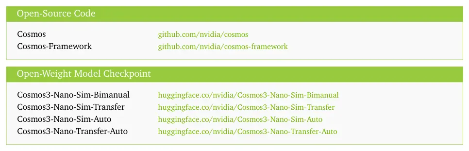
무슨 문제인가
Physical AI 시스템은 자기 행동이 다음 관측을 바꾸므로, 학습과 평가에는 행동에 따라 계속 반응하는 환경이 필요함. 실제 세계에서 이런 경험을 다 모으는 것은 비용이 크고 사람과 장비에 위험함. 기존 video world model은 clip 전체를 bidirectional attention으로 한 번에 denoising하므로, 행동이 하나씩 들어오는 상황에서 다음 장면을 바로 이어 만들 수 없음. 또 학습 때는 정답 과거 frame을 보고 추론 때는 자기가 만든 frame을 보므로, rollout이 길어지면 오차가 쌓임(exposure bias).
어떻게 푸나
Cosmos 3는 언어를 맡는 reasoner tower와 영상·action을 denoising하는 generator tower로 이루어진 Mixture-of-Transformers 모델임. 이 논문은 generator의 시간축 attention을 chunk 단위 causal mask로 바꿈. chunk 하나는 latent frame 몇 개와 그 구간의 clean control token(action, source video, depth·segmentation 같은 spatial control)으로 이루어짐. 현재 chunk 안의 frame은 함께 denoising하고, 과거 chunk만 볼 수 있으며 미래 chunk는 볼 수 없음. 완성된 chunk는 K/V cache에 넣어 다음 chunk의 history로 쓰고, 처음 몇 frame(sink)과 최근 구간만 남겨 memory를 제한함. 학습은 streaming video 생성용 autoregressive diffusion distillation 공개 recipe인 Causal-rCM을 그대로 따른 4단계임. Stage 0은 bidirectional attention을 유지한 채 domain과 control에 적응함. Stage 1은 정답 history를 보고 다음 chunk를 예측하는 teacher forcing(TF)임. Stage 2는 consistency distillation으로 적은 step만 쓰는 student를 만듦(TF-dCM). Stage 3은 student가 자기 rollout을 history로 쓰는 self forcing(SF) 상태에서 distribution matching distillation(DMD)으로 학습함(SF-DMD). 입력은 초기 관측, 언어, chunk별 control이고 출력은 chunk별 RGB 영상(자율주행은 다시점 영상과 LiDAR)임.
결과
- 결과 수치는 본문에서 확인 불가임. 세 예시 모델(Sim-Bimanual, Sim-Transfer, Sim-Auto)의 결과는 각각 5.5, 6.5, 7.5절에 있음. 저자는 영상 품질, control을 따르는 정도, 실행 속도를 예시별 protocol로 평가한다고 적음.
- 학습 단계별 비교와 실패 사례는 부록 C.5, Sim-Transfer의 Isaac Lab 평가 세부는 부록 C.4에 있음. 두 부록의 수치도 본문에서 확인 불가임.
- 실시간 interactive simulation은 초록에 적힌 저자 주장임. 모델·GPU별 처리 속도 수치는 본문에서 확인 불가임.
한계
저자도 서론과 2.3절에서, 미리 기록된 control로 생성하는 실험은 closed-loop feedback을 검증하지 않는다고 밝힘. 즉 policy가 생성 관측을 보고 다음 행동을 고르는 상황은 따로 검증해야 함. 학습 recipe는 Causal-rCM을 가져온 것이라 새로움은 domain 적응과 streaming 시스템 구현에 있음. 실로봇 실험이 있는지는 확인된 텍스트 범위에서 보이지 않음.
누리랩 연구와의 연결
- action에 따라 chunk 단위로 다음 장면을 이어 만드는 공개 체크포인트와 코드가 있음. world model 기반 policy 평가나 test-time planning 연구에서 시뮬레이터 backbone으로 써 볼 수 있음.
- 생성 history에 쌓이는 오차(exposure bias)를 다루는 SF-DMD 단계는, world model rollout이 언제 실제와 어긋나는지 탐지하는 failure detection 연구의 비교 대상이 됨.
9
68점
Robocasa-Mem: Benchmarking Environment and Process Memory in Long-Horizon Mobile Manipulation
Embodied AI
relevance 8/10
ICLR 양식 (추정)
Robotics (cs.RO)
지금 화면만으로는 다음 행동을 정할 수 없는 순간을 일부러 넣은 mobile manipulation 과제 9개와 demonstration 1,800개를 공개함. 구조화된 기억을 둔 baseline HMAP은 9개 과제 평균 성공률을 π0.5의 16.2%에서 24.2%로 올렸지만, 여러 일을 번갈아 하는 과제는 어떤 방법도 끝내지 못함.
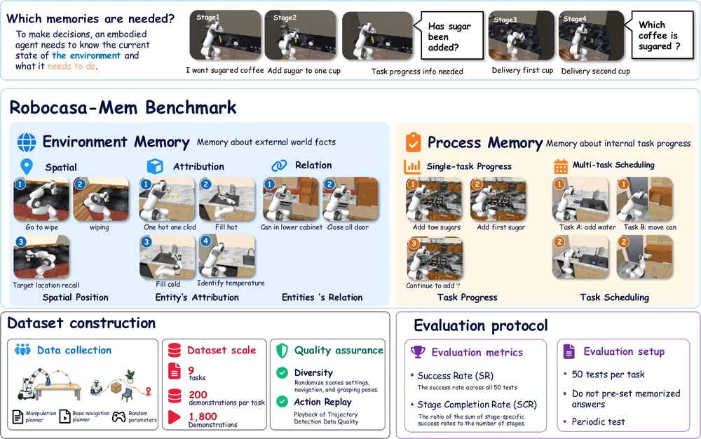
무슨 문제인가
로봇이 방을 옮겨 다니며 일하면 앞에서 본 정보가 시야에서 사라지거나 겉으로 보이지 않게 됨. 예를 들어 커피에 녹은 설탕은 화면으로 확인할 수 없어서, 어느 컵에 넣었는지는 기억으로만 알 수 있음. RoboCasa, BEHAVIOR-1K 같은 mobile manipulation benchmark는 과제 수행과 일반화를 재지만, 기억이 꼭 필요한 결정을 따로 떼어 재지 않음. RMBench, RoboMME 같은 로봇 기억 benchmark는 대부분 탁자 위나 고정된 팔에서만 실험함.
어떻게 푸나
RoboCasa-Mem은 RoboCasa 주방 시뮬레이션 위에 과제 9개를 만들고, 기억을 Environment Memory와 Process Memory로 나눔. Environment Memory는 물체 위치, 보이지 않는 속성(물 온도, 설탕 여부), 물체와 용기의 짝을 기억하는 과제임. Process Memory는 한 과제의 진행 정도(서랍 몇 개를 열었는지, 설탕 몇 개를 넣었는지)와 두 과제를 번갈아 할 때 남은 일을 기억하는 과제임. 과제는 현재 관측이 같아도 지난 이력에 따라 정답이 달라지는 지점을 넣도록 설계함. 어느 컵에 설탕을 넣어도 되는 과제처럼 정답 경로가 여럿이면, 평가기는 로봇이 실제로 한 행동을 기록해 뒤의 정답을 정함(Behavior-Conditioned Evaluation). 지표는 최종 성공률(SR)과 단계별 성공률의 평균(SCR: Stage Completion Rate) 두 가지이고, 과제당 50개 장면에서 평가함. baseline HMAP(Hierarchical Memory-Augmented Policy)은 두 층으로 동작함. 상위 planner(Qwen3-VL-4B)는 지시문, 현재와 50 step 전 이미지, 이전 기억을 받아 entity memory와 process memory를 텍스트로 갱신하고 언어 subgoal 하나를 냄. 하위 controller는 π0.5에 고정된 VGGT-Ω(다중 시점 3D 기하 encoder)의 특징을 learnable query와 cross-attention으로 골라 action expert 층을 scale·shift로 조절해 행동을 만듦.
결과
- 9개 과제 평균 SR이 HMAP 24.2%, π0.5 16.2%이고 평균 SCR은 47% 대 41%임. ACT, Diffusion Policy, MemER-style baseline은 평균 SR이 0~2%에 그침. MemER-style은 HMAP과 같은 상위 모델과 하위 policy를 쓰고 상위 기억 학습 방식만 다름.
- 효과는 보이지 않는 속성을 기억하는 과제에 몰림. TempReport(뜨거운 물을 받았는지 찬물을 받았는지 기억해 버튼 누르기)의 SR이 π0.5의 22%에서 86%로 오름. 보고 단계까지 간 경우만 보면 온도를 맞힌 비율이 41%에서 90%로 오름.
- Process Memory 과제에서는 개선이 고르지 않음. SugarCount SR은 두 방법 모두 28%이고 DrawerSearch는 HMAP 8%, π0.5 12%임. 두 과제를 번갈아 하는 HeatAndInspect와 FillAndRetrieve는 모든 방법의 SR이 0%임.
- 실제 AgileX Cobot Magic 로봇에서 원래 그릇 색을 기억해 같은 색 그릇에 물체를 넣는 과제 1개를 10회씩 시험함. 맞는 그릇에 넣은 횟수가 HMAP 8회, π0.5 2회임.
한계
평가는 대부분 시뮬레이션이고 실로봇은 과제 1개, 방법당 10회뿐임. 단계별 지표가 기억 실패와 집기·놓기 같은 실행 실패를 완전히 나누지 못한다고 저자도 적음. ablation은 SingleMilkMatch(우유 상자를 원래 쟁반 색과 같은 쟁반에 옮기는 MilkMatch 계열 과제) 한 과제에서만 했고, 부록의 학습 설정에는 FillAndRetrieve 학습 step과 optimizer 설정이 빠져 있음.
누리랩 연구와의 연결
- robot memory 연구에서 바로 쓸 수 있는 평가 환경임. 특히 보이지 않는 상태와 남은 일을 기억하는 문제를 이동 로봇에서 따로 떼어 재므로, 우리 기억 모듈을 탁자 위 benchmark 밖에서 검증할 때 씀.
- 여러 일을 번갈아 할 때 모든 방법이 실패한다는 결과는 long-horizon planning과 failure recovery 쪽의 열린 문제임. 남은 일을 추적하고 다시 이어 가는 planner를 제안할 근거가 됨.
10
68점
Motion-guided Contrastive Regularization For Latent World Models
World Model
relevance 7/10
ICLR 양식 (추정)
Computer Vision and Pattern Recognition (cs.CV)
픽셀 복원 없이 학습하는 JEPA world model이 배경만 기억하고 로봇·물체 변화는 놓치는 문제를, 같은 에피소드 안의 다른 장면과 비교하는 contrastive loss로 줄임. 배경을 무작위로 바꾼 OGBench-Cube에서 planning 성공률을 52%에서 78%로 올림.
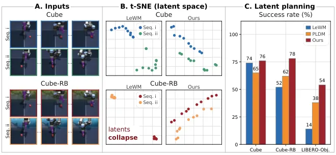
무슨 문제인가
JEPA(Joint Embedding Predictive Architecture) world model은 다음 관측의 픽셀 대신 latent를 예측하므로 모든 입력을 같은 latent로 보내는 collapse에 취약함. LeWM(LeWorldModel)은 batch latent를 isotropic Gaussian 분포로 맞추는 SIGReg로 이를 막음. 그런데 SIGReg는 latent의 통계만 정하고 어떤 정보를 담아야 하는지는 정하지 않음. 에피소드마다 다른 배경은 그 자체로 latent 분포를 충분히 다양하게 만듦. 그래서 encoder가 배경만 담고 로봇과 물체의 상태 변화는 약하게 담는 해가 생김. 저자는 이를 static collapse라 부르고, 이 경우 planning에 필요한 상태 구분이 latent에서 사라짐.
어떻게 푸나
LeWM의 latent prediction loss와 SIGReg는 그대로 두고 motion-guided contrastive loss를 더함. 입력은 현재 관측, 행동, 실제 다음 관측, 그리고 같은 에피소드에서 뽑은 다른 프레임 6개임. 같은 에피소드의 프레임은 배경이 같으므로 배경만으로는 실제 다음 관측을 고를 수 없음. 예측 latent 변화량은 예측한 다음 latent에서 현재 latent를 뺀 값이고, 후보마다 같은 방식의 변화량을 구함. 둘 사이 cosine similarity를 softmax로 묶어 분포를 만듦. 정답 분포는 one-hot이 아니라 optical flow로 만든 soft target임. 현재 프레임에서 각 후보까지의 flow를 SEA-RAFT(사전학습 optical flow 모델)로 구하고, 실제 다음 프레임 flow와 비슷할수록 높은 확률을 줌. 두 분포를 cross-entropy로 맞추며, flow 거리는 학습 전에 미리 계산해 두므로 학습 중에는 flow 모델을 돌리지 않음.
결과
- Cube-RB(OGBench-Cube에서 깊이 1m 이상 먼 픽셀만 ImageNet 이미지로 바꾼 변형)에서 성공률이 LeWM의 52%에서 78%로 오름. 원래 Cube에서는 LeWM 74%, 이 방법 76%로, LeWM은 배경 변화로 22퍼센트포인트 내리고 이 방법은 유지됨.
- LIBERO-Object(물체를 집어 옮기는 시뮬레이션 조작 과제 10개)에서 성공률이 LeWM의 14%에서 54%로 오름. 다만 frozen DINOv2를 쓰는 DINO-WM은 68%로 더 높음. 이 실험의 성공 기준은 원래 과제 완료가 아니라 목표 상태와의 물체 위치 오차 5cm 이내임.
- 같은 후보 6개에 one-hot target을 쓴 InfoNCE는 Cube-RB 56%, LIBERO-Object 34%에 그침. flow 기반 soft target을 쓰면 각각 78%와 54%임. 같은 에피소드에서 후보를 뽑는 것만으로 얻는 효과보다 큼. SIGReg를 빼면 58%와 14%로 내림.
한계
평가는 현재 이미지와 5 control step 뒤 목표 이미지를 주고 CEM(Cross-Entropy Method, 샘플링 기반 행동열 최적화) MPC로 도달 여부를 보는 짧은 planning임. 모든 실험이 시뮬레이션이고, 설정마다 사례 50개에 seed 반복이나 분산 보고가 없음. 배경이 정지해 있다는 가정에 기대므로 배경이 움직이면 flow 유사도가 오염될 수 있다고 저자가 밝힘. LIBERO-Object에서 hyperparameter에 따라 성공률이 34%에서 58%까지 달라짐.
누리랩 연구와의 연결
- world model 기반 test-time planning에서 latent가 배경에 끌려가 실패하는 원인을 static collapse로 짚고 진단 도구(t-SNE, MLP probing, 복원)를 함께 제시함. 실로봇의 복잡한 배경에서 JEPA world model을 쓸 때 점검 항목으로 쓸 수 있음.
- 같은 에피소드 안 후보를 motion 유사도로 가중하는 방식은 object-centric 표현이나 manipulation 상태 변화에 민감한 표현 학습 loss로 옮겨 쓸 수 있음.
11
62점
ReactWorld: Structuring Interaction Responses for Embodied Video Generation
World Model
relevance 9/10
Computer Vision and Pattern Recognition (cs.CV)
로봇 조작 영상 생성 모델이 denoising 도중에 누가 어디서 얼마나 움직일지를 먼저 예측하고, 그 예측으로 물체 feature와 frame 간 attention을 고치게 함. RBench 평균 점수가 같은 데이터로 fine-tuning한 baseline의 71.94에서 77.51로 오름.
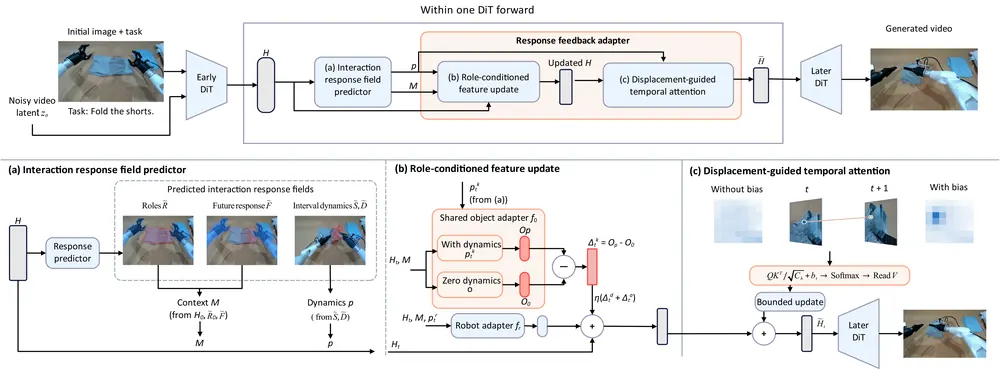
무슨 문제인가
Embodied video world model은 robot 행동의 결과를 미래 영상으로 보여 주지만, 물체 반응이 task 의도나 접촉과 어긋나는 경우가 많음. 접촉 전에 물체가 먼저 움직이거나, 잡은 물체가 gripper에서 떨어지거나, 관계없는 주변 물체가 움직임. 이런 오류는 영상 전체가 매끄러워도 생기고, 옷 접기에서 들리는 모서리처럼 좁은 영역과 짧은 구간에 몰려 있음. 화면 전체에 평균을 내는 denoising loss는 이런 좁은 영역을 약하게 학습하므로, 어느 물체가 언제 어디서 반응할지를 따로 다룰 방법이 필요함.
어떻게 푸나
ReactWorld는 Wan2.2-I2V-A14B를 고정하고 12번째 DiT block에 예측 head와 adapter를 붙임. 입력은 첫 이미지와 task 문장이고, 출력은 81 frame 영상임. 매 denoising step마다 중간 feature에서 interaction response field를 예측함. 이 field는 위치별 역할(robot, 직접 조작 대상, 간접 영향 물체, 배경), 전체 구간에 걸친 미래 반응 세기, 인접 frame 사이의 움직임 영역과 2D 변위로 이루어짐. 예측은 두 경로로 생성에 되돌아감. 첫째, 물체 쪽 feature 갱신값을 만드는 object branch를 예측 변위를 넣어 한 번, 변위를 0으로 두고 한 번 돌림. 두 출력의 차이만 영상 feature에 더함(zero-dynamics reference). 둘째, temporal attention은 다음 frame에서 7×7 주변 위치만 읽는데, 예측 변위가 가리키는 위치에 bias를 주어 그 안에서 어디를 읽을지 유도함. 학습 label은 Qwen3-VL로 역할을 정하고 SAM3 mask와 CoWTracker 궤적을 합쳐 오프라인으로 만듦.
결과
- RBench(task 5종과 robot 형태 4종, 모두 9개 범주에서 생성 영상을 VLM이 채점하는 benchmark) 평균 점수가 ReactWorld 77.51, 같은 초기화·데이터·학습량의 Video-FT 71.94임. 중간 feature를 궤적과 영역 간 관계에 맞추는 기존 방법 PhysisForcing은 74.21임. PhysisForcing보다 9개 범주 모두 높지만, Video-FT보다는 7개만 높고 사족 보행(63.35 대 66.90)과 humanoid(70.50 대 72.50)에서는 낮음.
- EZS-Bench(embodied 영역 점수 Domain과 영상 품질 점수 Quality를 재는 benchmark)에서 Domain이 86.98로 PhysisForcing 84.49, Video-FT 83.45보다 높음. Quality는 76.75로 baseline들과 거의 같음.
- ablation에서 attention 변위 bias만 뺀 모델은 PSS(물리·의미 타당성 점수, 5점 척도)가 4.62에서 4.37로, Domain이 86.98에서 85.38로 내려감. 예측 head만 붙이고 feedback을 안 쓴 모델은 PSS 4.13, Domain 84.11임.
- 평가자 50명의 5점 척도 사람 평가에서 접촉 타당성이 ReactWorld 4.06, Video-FT 3.24(p<0.001), PhysisForcing 3.78(p=0.140)임. 시각 품질은 PhysisForcing 4.16과 ReactWorld 4.12로 차이가 유의하지 않음.
한계
모든 결과는 VLM 채점과 사람 평가로 잰 생성 영상 점수이고, 생성 영상을 policy 학습이나 planning에 써서 실로봇 성공률을 잰 실험은 없음. 반응을 2D 변위로만 표현하므로 3D 접촉 관계는 다루지 않으며, label 생성이 Qwen3-VL, SAM3, CoWTracker의 정확도에 기댐. 코드 공개 여부는 본문에서 확인 불가함.
누리랩 연구와의 연결
- world model이 영상 전체보다 접촉 지점의 국소 반응을 먼저 예측하게 하는 구조라서, world model 기반 failure detection에서 물체 이탈이나 접촉 전 이동 같은 실패를 국소 영역 단위로 가려내는 데 참고할 수 있음.
- 역할 map(robot, 직접 대상, 간접 영향 물체)과 변위 field는 object-centric 중간 표현이므로, scene graph나 object-centric 3DGS 표현을 video world model의 조건으로 넣는 연구와 비교 대상이 됨.
12
62점
Time-to-Goal: Learned Temporal Metrics for Long-Horizon Planning with JEPA World Models
World Model
relevance 8/10
Robotics (cs.RO)
JEPA world model은 고정한 채 planning의 goal cost만 trajectory 시간 순서로 학습한 작은 metric으로 바꿈. 시뮬레이션 4개 환경의 평균 planning 성공률이 32.7%에서 63.0%로 오름.
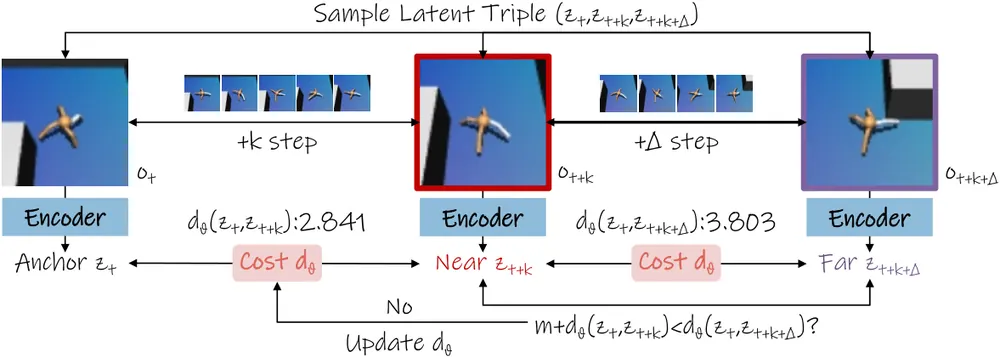
무슨 문제인가
JEPA(Joint-Embedding Predictive Architecture) world model은 관측을 latent로 바꾸고, action에 따라 latent가 어떻게 바뀔지 예측함. LeWM(LeWorldModel)은 hierarchy 없이 한 층으로 예측하는 flat 모델이고, 예측한 latent와 goal latent 사이의 Euclidean 거리를 cost로 삼아 action을 최적화함. 그런데 LeWM의 latent는 다음 상태 예측과, latent 분포를 Gaussian에 맞추는 정규화(SIGReg)로만 학습되므로, 시간상 goal에 더 가까운 상태가 더 작은 거리를 받는다는 보장이 없음. 저자들은 AntMaze와 FourRoom 기록 궤적에서, goal과 시간상 멀리 떨어진 상태들끼리는 Euclidean cost가 거의 같아져 어느 쪽이 더 가까운지 구분하기 어려움을 보임. 기존 H-JEPA는 여러 층의 hierarchy로 이를 풀지만, 예측 구조와 cost를 함께 바꾸므로 cost만의 효과를 따로 볼 수 없음.
어떻게 푸나
T2G(Time-to-Goal)는 고정된 LeWM latent 위에 작은 MLP를 얹고, 그 출력 공간의 Euclidean 거리에 학습되는 scale을 곱해 거리로 씀. 학습 데이터는 offline 궤적에서 뽑은 세 상태임: 기준 상태(anchor), k step 뒤의 가까운 상태, 그보다 Δ step 더 뒤의 먼 상태. margin ranking loss로 anchor에서 가까운 상태까지의 거리가 먼 상태까지의 거리보다 margin 이상 작도록 학습함. reward나 policy label은 쓰지 않고 시간 순서만 씀. 추가 파라미터는 0.182M으로 flat LeWM의 1.6%임. planning 때는 고정된 predictor로 후보 action 열을 rollout하고, 마지막 n개 예측 상태와 goal 사이의 T2G 거리 평균을 cost로 삼아 gradient 기반 planner가 action을 최적화함(last-n). 전체 rollout을 평균하는 dense 변형도 함께 시험함.
결과
- 4개 시뮬레이션 환경의 planning 성공률(환경당 50개 start-goal 과제, seed 3개 평균)을 비교함. 환경은 FourRoomDistractors(방해물이 있는 방 4개 navigation), Visual AntMaze(4족 로봇 미로 navigation), Push-T(평면에서 T자 블록 밀기), OGBench Cube(3D 큐브 집기)임. last-n T2G는 flat LeWM 대비 AntMaze 18.0%에서 58.7%, Cube 32.0%에서 63.3%, FourRoom 40.7%에서 78.7%, Push-T 40.0%에서 51.3%로 모두 오름.
- 가장 강한 baseline인 3층 H-JEPA(추가 파라미터 21.58M)와 비교하면 4개 환경 평균은 61.7% 대 63.0%로 비슷함. 다만 AntMaze(73.3% 대 58.7%)와 FourRoom(96.0% 대 78.7%)에서는 3층 H-JEPA가 높고, T2G는 Cube와 Push-T에서 앞섬.
- cost를 매길 상태를 고르는 방식이 결과를 크게 바꿈. Cube에서 dense T2G는 4.0%이고 last-n T2G는 63.3%임. Cube의 last-n 창 크기는 1이라 마지막 예측 상태 하나만 봄(다른 환경은 2). 저자들은 dense cost가 집기 준비 동작처럼 goal과 먼 중간 상태를 벌하기 때문이라고 설명하지만, 따로 검증하지는 않음.
- 기록된 궤적 50개에서 goal까지 18~22 model step 남은 구간의 순서 맞힘 정확도를 잼. 같은 goal에 대해 더 가까운 상태가 더 낮은 cost를 받는 비율이 AntMaze 53.44%에서 67.69%로, FourRoom 50.27%에서 61.53%로 오름.
한계
모든 실험이 시뮬레이션이고 실로봇 실험은 향후 과제로 남김. Cube에서는 T2G의 초기 planning horizon을 baseline의 4 대신 2로 바꿔서, 그 환경의 향상을 cost 교체만의 효과로 보기 어려움. seed 3개, 환경당 과제 50개 규모이고, T2G는 상대 순서만 학습하므로 남은 step 수를 직접 추정하지는 않음.
누리랩 연구와의 연결
- world model을 바꾸지 않고 test-time planning cost만 학습해 long-horizon 성공률을 올린 사례임. 우리 world model 기반 inference-time planning에서 goal cost를 따로 설계할 때 바로 붙여 볼 수 있는 baseline임.
- 궤적 시간 순서만으로 학습한 진행도 거리는 실행 중 진행이 멈추는지 판단하는 failure detection 신호로도 쓸 수 있음. 다만 논문은 이 쓰임새를 시험하지 않음.
13
58점
Which Physical Tactile Cues Matter for Contact-Rich Imitation Learning? A Controlled Real-Robot Study
Manipulation
relevance 10/10
ICRA·IROS·RA-L 계열 양식 (추정)
Robotics (cs.RO)
vision-based tactile sensor 한 개의 영상을 접촉 모양, 접촉 기하, 접선 변형 세 신호로 나눠 Diffusion Policy에 따로 넣고, 어느 신호가 imitation learning에 도움이 되는지 실로봇 720회로 비교함. 세 신호를 모두 쓰면 세 과제 합산 성공률이 카메라만 쓸 때의 57.8%에서 78.9%로 오름.
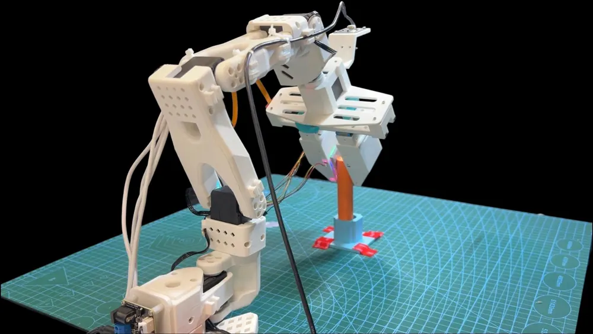
무슨 문제인가
GelSight 계열 vision-based tactile sensor는 탄성체가 눌린 모습을 카메라로 찍음. 그래서 영상 한 장 안에 접촉 모양, 눌린 깊이, 옆으로 밀린 변형이 함께 담김. 기존 visuo-tactile policy는 이 영상을 보통 RGB 그대로 일반 이미지 encoder에 넣음. 그래서 policy가 실제로 어떤 물리 신호를 써서 좋아졌는지 알 수 없음. 이를 알아야 센서 설계와 입력 표현을 접촉 상황에 맞게 고를 수 있음.
어떻게 푸나
저자들은 LeRobot(오픈소스 로봇 학습 프레임워크)에 붙는 평행 그리퍼를 만들고, 한쪽 손가락에 marker가 박힌 탄성체, 내부 카메라, 보정된 조명으로 된 tactile sensor를 달았음. 같은 tactile 영상에서 세 입력을 뽑음: 원본 tactile RGB, 보정 신경망이 추정한 surface normal과 이를 Poisson 적분한 depth map, marker 이동량을 보간한 dense marker-flow field임. tactile 입력 구성은 tactile RGB만, normal/depth만, marker flow만, 세 신호를 각각 다른 encoder로 처리하는 full tactile의 네 가지임. 이를 tactile 없이 카메라만 쓰는 vision only와 비교함. 모든 구성은 global 카메라, wrist 카메라, 로봇 상태와 함께 같은 Diffusion Policy에 들어가고, 출력은 앞으로의 행동 24개이며 그중 8개를 실행함. RGB와 normal/depth는 ResNet-18, marker flow는 MLP로 encoding하고 demonstration, 학습 설정은 모두 같게 둠. 이어서 full tactile을 고정하고 tactile RGB encoder로 ResNet-18과 촉각 사전학습 encoder Sparsh-DINO를 비교함. fusion 방식은 단순 concatenation과 wrist 카메라와 tactile RGB 사이 cross-attention을 비교함.
결과
- 세 과제(시험관 자세 바꿔 꽂기, 칠판 닦기, 좁은 틈 peg-in-hole 삽입), 과제당 30회 실로봇 평가에서 합산 성공률은 vision only 52/90(57.8%), full tactile 71/90(78.9%)임. 과제별 상승폭은 30.0, 23.3, 10.0퍼센트포인트임.
- 단일 신호 중 합산 성공률은 marker flow 74.4%, tactile RGB 73.3%, normal/depth 66.7% 순임. 칠판 닦기에서는 tactile RGB가 가장 높아 최선 신호가 과제마다 다름. full tactile은 최선 단일 신호보다 과제마다 성공 1회씩만 많음.
- full tactile 고정 시 ResNet-18에 cross-attention을 쓰면 합산 성공률이 78.9%에서 85.6%로 오름. 이는 Sparsh-DINO에 concatenation을 쓴 83.3%와 비슷함. 가장 높은 값은 Sparsh-DINO와 cross-attention 조합의 87.8%임.
한계
구성당 과제별 30회라서 marker flow와 tactile RGB의 1회 차이, full tactile과 단일 신호의 차이는 통계적으로 가르기 어렵고 유의성 검정은 없음. 신호마다 frontend 구조가 달라 차이가 신호 자체 때문인지 encoder 때문인지 완전히 분리되지 않음. normal/depth는 접촉을 만드는 데, marker flow는 접촉 유지에 강하다는 해석은 실패 사례를 눈으로 본 정성 분석이고 힘 측정은 없음. 센서 1종, 평행 그리퍼 1종, 탁상 과제 3개이며 demonstration 수는 본문에서 확인 불가함.
누리랩 연구와의 연결
- tactile perception을 manipulation policy에 넣을 때 raw RGB 대신 marker flow와 geometry를 나눠 넣는 설계 근거가 됨. 접촉 단계별로 유용한 신호가 다르다는 관찰은 tactile 기반 failure detection에서 단계별 실패 원인을 진단하는 실험으로 이어 볼 수 있음.
- LeRobot 호환 저가 visuo-tactile 플랫폼이라 VLA나 Diffusion Policy에 촉각을 붙이는 실험의 출발점으로 쓸 수 있음.
14
58점
Compounding Physical RSI: Turning Execution Failure into Inherited Capability
VLA
relevance 10/10
CoRL 양식 (추정)
Robotics (cs.RO)
generalist 조작 policy가 실패한 rollout에서 막힌 단계를 찾고, 그 단계에 맞춘 offline RL과 weight 보간으로 다음 세대 policy를 만드는 반복 루프를 제안함. 이 루프로 만든 policy(제출 이름 CSU-AI-07)가 RoboDojo-Sim 42개 과제에서 성공률 20.70%로 공개 policy 13개 중 최고인 14.88%보다 5.82퍼센트포인트 높음.
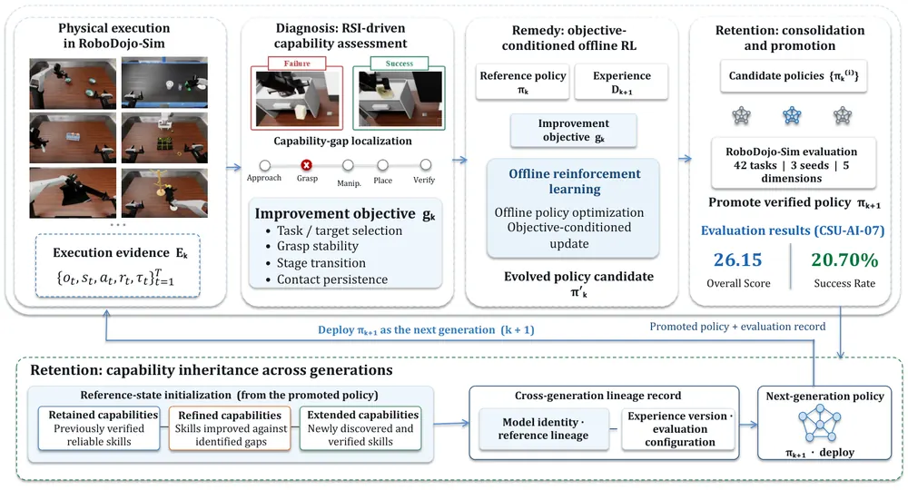
무슨 문제인가
조작 과제는 접근, 잡기, 옮기기, 놓기 같은 단계가 차례로 이어지므로, 앞 단계를 넘지 못하는 policy는 뒤 단계에서 어떻게 실패할지 드러나지 않음. 그래서 고정된 offline dataset만으로는 policy가 다음에 부딪힐 실패를 미리 담을 수 없음. 저자는 이 때문에 RSI(Recursive Self-Improvement: policy가 스스로 실행, 실패 진단, 갱신을 반복하는 방식)가 필요하다고 주장함. 그런데 실제로 반복하면 세 가지가 막힘: 마지막 성공/실패 신호만으로는 어느 단계에서 실패했는지 모르고, 실패 궤적에는 무엇을 했어야 하는지가 없으며, 공유 가중치를 고치면 이미 잘하던 과제가 나빠질 수 있음. 저자는 이 개선이 세대를 거쳐 쌓이게 하는 것(compounding)을 핵심 문제로 정의함.
어떻게 푸나
한 세대는 Diagnosis, Remedy, Retention 세 단계로 돌아감. Diagnosis는 현재 policy를 RoboDojo-Sim에서 실행해 관측, 상태, 행동, reward, 단계 표시가 담긴 궤적을 모으고, 기대한 단계 진행(approach, grasp, manipulate, place, verify)과 어긋나는 지점을 찾음. 그 결과를 실패한 과제, 막힌 단계, 고칠 능력 축(목표 선택, grasp 안정성, 단계 전환, 접촉 유지 등)으로 이루어진 개선 목표로 정리함. Remedy는 이 목표에 맞는 경험을 과제 시연, 기하 기반 시연, 현재 policy의 실행 기록에서 골라 씀. 실패하거나 불안정한 궤적은 진단에만 쓰고, 검증을 통과한 구간만 학습 데이터로 씀. 이 데이터로 목표를 조건으로 한 offline RL을 하되, 이전 세대 policy에서 멀어지지 않도록 divergence penalty를 줌. Retention은 이전 policy와 갱신된 policy의 가중치를 여러 비율로 선형 보간한 후보를 만들고, 42개 과제 전체로 평가해 가장 좋은 후보를 다음 세대의 기준 policy로 올림.
결과
- RoboDojo-Sim(일반화, 기억, 장기 과제, 정밀 조작, 열린 과제 지시의 다섯 능력을 재는 시뮬레이션 조작 과제 42개 모음)에서 평가함. 단계별 진행도를 연속값으로 재는 Overall Score의 3개 seed 평균이 26.15임. 공개 leaderboard 2위 GalaxeaVLA(G0.5)는 20.23으로 5.92점 차이임.
- 과제 전체를 끝까지 마친 비율인 성공률은 20.70%이고 G0.5는 14.88%, π0.5는 6.93%임. 다만 이 비교는 서로 다른 팀이 낸 policy의 leaderboard 비교이며, 같은 base policy에서 루프를 돌리기 전과 후를 비교한 표는 없음.
- seed 0은 후보 선택에 썼고 seed 1, 2는 선택에 쓰지 않음. seed별 Overall Score는 26.53, 25.46, 26.45로 차이는 1.07점 이내임.
한계
Diagnosis, 경험 선택, weight 보간 각각의 기여를 가르는 ablation이 없고, 몇 세대를 돌렸는지, 시작 policy가 무엇인지, 세대별 성능 변화가 어떤지는 본문에서 확인 불가임. 그래서 세대를 거쳐 개선이 쌓인다는 주장은 실험으로 직접 보이지 않았음. 실험은 시뮬레이션뿐이고 실로봇 결과와 코드 공개는 없으며, 진단 operator가 자동으로 어떻게 단계를 판정하는지 구현 세부도 적혀 있지 않음.
누리랩 연구와의 연결
- 실패 rollout을 단계 단위로 진단해 학습 데이터 선택과 offline RL 목표로 바로 잇는 구조는 failure detection/recovery를 VLA 개선 루프에 붙이는 설계 예시로 참고할 만함. 단, 진단 방법의 세부가 없어 재현보다는 문제 정의 참고용임.
- 갱신 전후 가중치를 보간하고 전체 과제 평가로 고르는 Retention은 VLA를 과제별로 계속 고칠 때 기존 능력 저하를 막는 간단한 baseline으로 비교 실험에 넣어 볼 수 있음.
15
58점
Rethinking Self-Repair in Code-as-Policy Agents: What Drives Retry Success?
Embodied AI
relevance 9/10
CoRL 2026 채택
Robotics (cs.RO)
code-as-policy agent가 실패 뒤 재시도할 때 성공을 만드는 것이 실패 맞춤 피드백인지 다시 따져 봄. 실패 label에 맞춘 피드백은 단순 재샘플링보다 회복률이 높지만(85.3% 대 68.3%), 다른 실패의 피드백이나 고정된 과제 안내문도 비슷한 회복률을 보임.
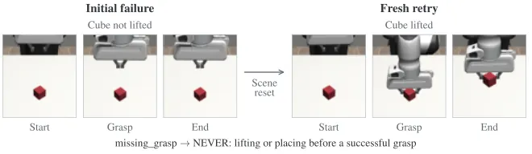
무슨 문제인가
code-as-policy agent(언어 지시를 로봇 API 호출 프로그램으로 바꾸는 언어 모델)는 실행이 실패하면 실행 결과를 보고 다시 프로그램을 쓰는 self-repair를 흔히 씀. 재시도가 성공해도 그 이유는 여러 가지일 수 있음. 한 번 더 샘플링한 효과, 짧은 과제 안내문의 효과, 지금 실패에 대한 정보의 효과, 이전 프로그램을 고친 효과가 섞여 있음. 기존 로봇 self-repair 연구는 이 요인들을 같은 재시도 횟수와 token 예산에서 나눠 비교하지 않았음.
어떻게 푸나
robosuite(MuJoCo 기반 로봇 조작 시뮬레이터)의 Panda arm에서 고정된 Qwen2.5-Coder-7B가 privileged state만 받아 Python 프로그램을 씀. 입력은 API 문서, 과제 설명, 조건별 피드백이고 출력은 완전한 새 프로그램임. 첫 실행이 실패하면 장면을 원래대로 reset하고 최대 5번 재시도함. Compiled 조건에서는 규칙 기반 labeler가 실패를 14개 label 중 하나로 분류함. 그다음 label과 API 종류로 고정 template(진단 한 줄과 MUST/NEVER 지시)을 골라 prompt에 쌓음. 이전 프로그램은 prompt에서 뺌. 비교 조건은 피드백 없이 다시 뽑는 Resample, 같은 과제의 다른 label 실패에서 가져온 Different-Label Feedback, 과제마다 하나로 고정한 Fixed Task Template임. 이전 프로그램을 보여 주고 고치게 하는 Direct+Compiled와, 고정 안내문을 첫 시도부터 쓰는 Static-from-Start도 함께 봄. 주 지표는 conditional recovery@5(첫 실패 중 5번 재시도 안에 성공한 비율)임.
결과
- 같은 252개 첫 실패에서 Compiled의 recovery@5는 85.3%, Resample은 68.3%임. 차이는 17.1퍼센트포인트(95% CI 9.9~24.2)임. 총 token 예산을 2,000과 5,000으로 고정해도 차이는 15.9와 14.7퍼센트포인트로 유지됨.
- 실패 label을 맞추는 효과는 검출되지 않음. Different-Label Feedback과 Fixed Task Template은 둘 다 86.1%로 Compiled(85.3%)와 비슷함. Compiled가 두 조건보다 0.8퍼센트포인트 낮지만 신뢰구간이 0을 포함하므로 동등성까지 보인 것은 아님.
- 새 장면 700개에서 고정 안내문을 첫 시도부터 쓰는 Static-from-Start는 첫 시도 성공률을 19.3%에서 36.9%로 올림. 6번 실행 안의 전체 성공률은 92.4%로 Compiled 89.6%와 차이가 유의하지 않음(Holm 보정 p=0.13). 성공 episode당 token은 2,087 대 2,578로 더 적음.
- 이전 프로그램을 보여 주고 고치게 하는 Direct+Compiled의 recovery@5는 21.4%로 가장 낮음. 테두리를 잡아야 하는 nut insertion 과제에서는 중심을 잡으라는 template 때문인지 Compiled가 Resample보다 낮음(82.5% 대 97.5%, 40개 실패).
한계
모든 실험이 privileged state를 쓰는 시뮬레이션이고, 실패 뒤 물리 상태에서 이어 가는 회복은 다루지 않음. Static-from-Start와 Direct+Compiled는 안내 내용과 생성 지시문을 함께 바꿔 원인을 분리하지 못함. 피드백이 coarse label 수준이라 더 자세한 실패 정보나 이미지 피드백이 도움이 되는지는 확인되지 않음.
누리랩 연구와의 연결
- failure detection/recovery 연구에서 실패 진단을 넣은 재시도 방법을 평가할 때 Resample, 다른 실패의 피드백, 고정 안내문을 baseline으로 넣어야 한다는 구체적 실험 설계를 줌.
- test-time optimization 관점에서 재시도 이득의 상당 부분이 실패 정보가 아니라 과제 안내문에서 온다는 결과는, VLA나 LLM planner의 실패 진단 모듈 효과를 따로 검증해야 할 근거가 됨.
오늘의 흐름
- 사람 영상과 시뮬레이션으로 로봇 데이터 대신하기: 로봇 demonstration을 덜 모으려고 사람 1인칭 영상이나 시뮬레이션에서 만든 데이터로 policy를 학습함. 사람 영상은 장면이 바뀐 평가에서 이득이 크고, 시뮬레이션만으로 학습한 humanoid는 처음 보는 실제 집에서도 동작함. ELA는 사람 영상에서 뽑은 latent action을 policy와 함께 학습해 적은 로봇 demonstration을 보완함. Open-HumanWAM, Perceptive Humanoid Motion, ELA
- JEPA world model로 planning할 때 무엇을 고칠지: JEPA(Joint-Embedding Predictive Architecture)는 픽셀을 복원하지 않고 latent끼리 예측하는 world model임. 이 모델은 그대로 두고 goal cost나 학습 loss만 바꿔 planning 성공률을 올린 논문이 둘 나옴. 하나는 시간 순서로 배운 거리로 goal cost를 바꾸고, 다른 하나는 로봇·물체 변화보다 배경을 따라가는 latent를 contrastive loss로 바로잡음. Time-to-Goal, Motion-guided Contrastive Regularization
- 실패를 미리 보거나 실패에서 배우기: 사람이 policy의 다음 동작을 미리 보고 거절한 기록, 실패 rollout에서 진행이 멈춘 단계, 실패 label에 맞춘 재시도 피드백을 학습 신호로 씀. 이 가운데 code-as-policy 재시도 연구는 실패 맞춤 피드백의 이득 상당 부분이 고정된 과제 안내문으로도 나온다고 보고함. PHIL, Compounding Physical RSI(Recursive Self-Improvement), Rethinking Self-Repair
- VLA를 고치고 고르는 비용 줄이기: π0.5 계열 VLA를 여러 task에서 RL로 post-training하는 방식을 비교하고, 실로봇 rollout 없이 checkpoint를 고르는 점수를 만듦. RL post-training 비교 연구에서는 policy를 고정하고 critic으로 action 후보만 고르는 방식도 처음 보는 물체에서 성공률을 올림. Scaling Generalist Robot Policy Improvement, RACE, NEO-VLA
- 기억과 상호작용을 따로 다루는 benchmark와 모델: 지금 화면만으로는 다음 행동을 정할 수 없는 mobile manipulation benchmark와, 물체 반응을 따로 예측하는 조작 영상 생성 모델이 나옴. RoboCasa-Mem, ReactWorld, Cosmos interactive simulation
해볼 만한 연구
거절된 예측으로 실패 예측기 학습하기
- 질문: 사람이 실행 전에 거절한 action chunk를 label로 쓰면, policy가 실패하기 전에 실패를 예측하는 detector를 만들 수 있는지 확인함.
- 첫 실험: PHIL 방식으로 모은 거절·수락 chunk 쌍으로 분류기를 학습함. 같은 데이터에서 RACE의 상태별 허용 오차를 실행 중 매 chunk에 적용한 점수와 실패 직전 탐지 시점, 오경보율을 비교함.
- 가장 가까운 연구: PHIL은 거절 기록을 policy 갱신에만 쓰고 실패 예측기로는 쓰지 않음. RACE는 상태별 오차를 checkpoint 점수 하나로 모아 쓰고, 실행 중 판단에는 쓰지 않음.
학습한 진행도 거리로 실행 중 정체 탐지하기
- 질문: 궤적 시간 순서만으로 학습한 goal까지의 거리가 실제 실행에서 진행이 멈춘 순간을 가려내는지 확인함.
- 첫 실험: Time-to-Goal(T2G) 방식의 거리를 LIBERO(시뮬레이션 조작 과제 모음) rollout에 붙여 거리가 줄지 않는 구간을 실패 신호로 씀. 성공·실패 rollout에서 탐지 정확도를 raw latent 거리와 비교함.
- 가장 가까운 연구: Time-to-Goal은 이 거리를 planning cost로만 쓰고 실패 탐지는 시험하지 않음.
재시도 피드백의 효과를 실로봇 VLA에서 다시 재기
- 질문: 실패 진단 피드백 이득의 상당 부분이 고정 과제 안내문으로도 나온다는 결과가 언어 조건 VLA의 재시도에서도 유지되는지 확인함.
- 첫 실험: π0.5 계열 VLA의 실패 뒤 재시도에 실패 맞춤 지시, 다른 실패의 지시, 고정 안내문, 단순 재시도를 각각 주고 회복률을 비교함.
- 가장 가까운 연구: Rethinking Self-Repair는 시뮬레이션의 code-as-policy agent만 다루고, privileged state를 받는 조건임.
꼭 읽을 논문
- Reinforcement Learning Enables Scaling Generalist Robot Policy Improvement: VLA RL post-training 방식 세 계열(FSFT, BoN, OGPO)을 비교함. 학습 task를 1개부터 144개까지 늘리며 같은 조건에서 잰 실험 연구임.
- Open-HumanWAM: 사람 영상 50,000시간 corpus와 체크포인트를 공개해 사람 영상 사전학습의 baseline으로 바로 쓸 수 있음.
- Correct Robots Before They Make Mistakes (PHIL): 실행 전 거절을 preference 데이터로 바꾸는 방식이 failure recovery 데이터 수집에 직접 이어짐.
- RACE: 실로봇 평가 없이 checkpoint를 고르는 점수라 VLA fine-tuning 실험 비용을 줄이는 데 바로 쓸 수 있음.
- RoboCasa-Mem: robot memory를 이동 조작에서 따로 떼어 재는 공개 benchmark임.